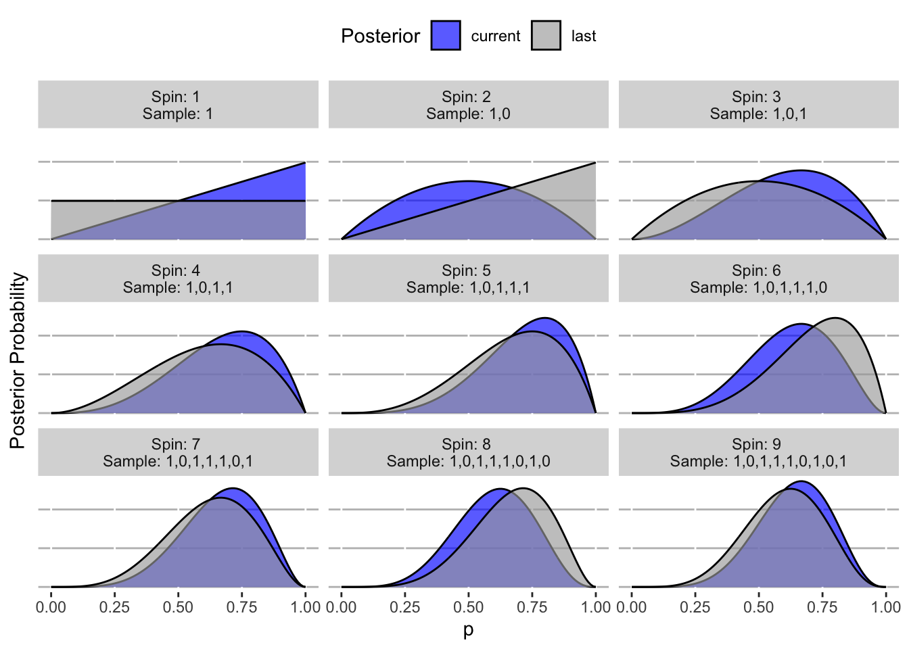

“Colombo [Christopher Columbus] made a prediction based upon his view that the world was small. But since he lived in a large world, aspects of the prediction were wrong. In his case, the error was lucky.” (19)
All models are and will always be wrong, that’s why they are called models. The “small world” represented by the model can only hope to be reflective of “large world”, the actual environment in which the model, insights, and inference that come out of it are used (i.e., where the rubber meets the road).
2.1 Unraveling the counting process
The “garden of forking paths” idea is about stretching out the process for counting things. Often in statistics, we just use formulas, or integrals, or whatever other notation to think through logic in our heads. This fundamental, systematic approach to counting lets us see what’s really going on behind the scenes. Ultimately, this leads to a more intuitive understanding of what Bayesian modeling is (in McElreath’s words): “really just counting and comparing of possibilities” (20).
2.1.1 First, the likelihood
In the marble example, he starts by counting the number of ways a particular observed sequence of marble draws could have occurred given an assumed true state of the bag (i.e., a hypothesis, which he calls conjecture). Then proceeds to manually count (and draw) the possibilities–nothing fancy about it, just brute force. Once this count is obtained, the question becomes: what is this collection of counts for all other possible states of the bag?. This is getting at what Bayesian analysis fundamentally is: determining which state of the world is most likely given the evidence.
“By comparing these counts, we have part of a solution for a way to rate the relative plausibility of each conjectured bag composition.” (23)
The word relative foreshadows many implications in Bayesian analysis, such as the focus on priors and likelihoods (not the normalizing constant), the different approaches to getting at the same answer (counts, rates, etc.), and the focus of comparing possible hypotheses relative to one another (and the whole slate of possibilities).
2.1.1.1 Translating to familar notation
Since I come at this from the “traditional” statistical point of view, it’s helpful to reconcile the approach here with the way I would typically think about it. Namely, we have a bag with four (4) marbles in it, each one being white or blue. Based on a sample from the bag, we want to infer what make up of all marbles is. Thus, the unknown parameter can be thought of as \(p\), the proportion of marbles that are blue (or white if we wanted). So, \(p\) can be one of five choices: \(p \in (0, .25, .5, .75, 1)\). On page 21 it was stated that “a sequence of three marbles is pulled from the bag, one at a time, replacing the marble each time and shaking the bag before drawing another marble”–so we are assuming that we are selecting randomly with replacement (as a side note, a key point is our assumption: we are using our judgement that the sampling method (shaking randomly) is sufficient to assume random, independent draws, but this paradigm leaves the possibility to account for modeling steps where this assumption may not be valid).
If we take \(N=3\) draws and \(X=2\) is the number that were blue, then we can think of:
\(X \sim Binomial(N=3, p)\)
And we get the following counts of possible ways to observe this sequence for each value of \(p\).
Code
# Possible values of pp <-c(0, .25, .5, .75, 1)marbles <-length(p) -1# Number of samplesN <-3# Observed sequence (1 = blue, 0 = white)X <-c(1, 0, 1)X <-sum(X)# How many ways could this happen for each p?ways <- (marbles * p)^X * (marbles * (1-p))^(N-X)cbind(p, ways, posterior_probability = ways /sum(ways))
This matches what is in the book on page 23. Why? Well because there is a finite number of marbles, and we are re-scaling to be in absolute terms relative to that, instead of being in rate terms. The point is that we can think of the counting process in absolute magnitude (counts), relative (probabilities), or even likelihoods (basically, non-normalized probabilities). They will all produce the same posterior probability suggesting that the bag most likely has 3 blue marbles, because our calculation is relative to span of possible hypotheses (conjectures).
Here we use the full binomial distribution for our calculations:
Code
# Compute traditional binomial probabilitiesbinom_probs <-dbinom(x = X, size = N, prob = p)cbind(p, binom_probs, posterior_probability = binom_probs /sum(binom_probs))
They all lead to same relative posterior probability (3 blue marbles).
One key caveat here that comes next: these results assume that each value of \(p\) is equally likely. But as he points out:
“We may have additional information about the relative plausibility of each conjecture. This information could arise from knowledge of how the contens of the bag were generated.” (25)
This gets at the idea of a prior distribution. We may know something about how the bag was arranged, such that we have an inkling that a particular value of \(p\) is more likely to be true than the rest. In that case, what we have done above doesn’t work.
2.1.2 Incorporating prior knowledge
Since we’ve just established the number of ways to observe the original sequence of draws (blue, white, blue), we now consider that as our current model (or information) we know about the process. So if we took another draw, we can consider our current information as the prior knowledge, and combine that with the number of ways we could observe the next blue marble:
# New marble drawn blueX_new <-1# Number of trialsN_new <-length(X_new)# How many ways could this happen for each p?ways_new <- (marbles * p)^X_new * (marbles * (1-p))^(N_new-X_new)# Number of ways to observe the new sequence, given our prior informationprior <- waysposterior_ways <- ways_new * priorcbind(p, ways_new, prior, posterior_ways, posterior_probability = posterior_ways /sum(posterior_ways))
This gets at something that was always murky in Bayesian updating: wouldn’t (or shouldn’t) your priors technically always reflect the most recent information, up to the very second? Meaning that if we set an initial prior, and then collected a single sample, and updated our model, shouldn’t the posterior of that model now be our prior for any subsequent estimate? Well, yes, and it turns out (as we’ve shown about) that these are equivalent ways to think about the mathematical procedure, because you are just enumerating the ways that your sequence of observations could have been observed. So the important piece is just capturing what you know about the parameters at the beginning, and also reflecting any additional information that comes about in the proceeding utilization of information.
I could just wait until all my data is collected over some period of time, combine that with original priors, and get some estimate, or I could sequentially run my estimation procedure each time as a new observation comes in, with everything prior to that being reflected in a prior–it is the same thing. The key is our assumption about how that intermediate information is being generated sequentially–if we learn additional information after say, the 10th sample, that was never known before, we can then incorporate that into our estimation at that point in time.
“This updating approach amounts to nothing more than asserting that (1) when we have previous information suggesting there are W ways for a conjecture to produce a previous observation D and (2) we acquire new observations _D*_ that the same conjecture can produce in _W*_ ways, then (3) the number of ways the conjecture can account for both D as well as _D*_ is just the produce W X _W*_…Multiplication is just a shortcut to enumerating and counting up all of the paths through the garden that counld produce all the observations.” (25)
The example he gives to demonstrate the point on “additional information in between draws” is if suddenly you knew something about how the bags of marbles are produced (which is new data in a different form), which implies that there will be no bags containing all white or all blue marbles, three times as many containing only one blue marble and two times as many containing two blue marbles, both vs. one white marble, then we can now updating our current knowledge from the draws we’ve already done with this new information:
Code
# What we know NOWprior <- posterior_ways# Relative counts of the conjecturescounts <-c(0, 3, 2, 1, 0)# New waysways_new <- prior * countscbind(p, prior, counts, ways_new, posterior_probability = ways_new /sum(ways_new))
Notice that if we had known about the bag proportions before we did any draws, that would have been the more intuitive prior distribution to start with, yet we would have reached the same answer. We’re just enumerating possibilities based on the information we receive.
In this vain, he rarely recommends that we would use a “principle of indifference” (i.e., act like we know nothing about the parameters beforehand, and treat them all as equally likely):
“This book does not use nor endorse”ignorance” priors. As we’ll see in later chapters, the structure of the model and the scientific context always provide information that allows us to do better than ignorance.” (26)
This is obviously true. There is no circumstance where we should claim we know absolutely nothing about. Even if it is just a little, include it in the model.
2.2 Building a model
He characterizes the model building process into three steps, which supports our previous profundity about Bayesian thinking: switching from thinking about the data to the model, and only use data as a fleeting piece of information to fine tune that model. The three steps are:
Data story: Thinking about the data-generating process (no data included)
Update: Use your data to now revise, or as he says, “educate” your model based on evidence
Evaluate: That is your model as of now, but up to this point in time, we may need to change it
“But all data stories are complete, in the sense that they are sufficient for specifying an algorithm for simulating new data.” (28)
This is profound. Because once we specify the data-generating process, we think we now know (to the best of our knowledge), how an subsequent data would be generated. Thus, we don’t actually need real data to begin evaluating the truth to our model. We can start simulating it and see how it plays out. If stuff starts to look how it does it real life, we may be on the right track, and then could move forward with getting real data to inform our estimates.
“When you are forced to consider sampling and measurement and make a precise statement of how temperature predicts ran, many stories and resulting models will be consistent with the same vague hypothesis. Resolving that ambiguity often leads to important realizations and model revisions, before any model is fit to data.” (29)
This is exactly my point I made in Section 1.2.1. There are infinite ways to procedurally carry out a study answering the same question (i.e., how you define things, how data is collected (exactly), every detailed assumption made along the way, etc.). All of these nuances can have drastic effects on the ultimate conclusions made.
2.2.1 Updating priors
He goes through the concept of what Bayesian updating is to get a feel for it. We can recreate Figure 2.5 (page 30) to better intuit what is happening behind the scenes.
Code
library(tidyverse)# The observed sample sequenceobserved_sample <-c(1, 0, 1, 1, 1, 0, 1, 0, 1) # 1 = water; 0 = landN <-length(observed_sample)# Approximate the set of inifinite p-values by a large set of discrete onesp_continuous <-seq(0, 1, .01)# Set the prior probability (uniform over the possibly choices)prior <-rep(1/length(p_continuous), length(p_continuous))# Set the current posterior as the prior (before any data collected)last_posterior <- prior# Make result setresults <-tibble()# For each value in the observed sample for(i in1:N) {# 1. Get the sub-sample sub_sample <- observed_sample[1:i]# 2. Compute metrics (the number of water samples, and the total number of spins) W_temp <-sum(sub_sample) N_temp <-length(sub_sample)# 3. Compute the likelihood for each p temp_likelihood <- p_continuous^W_temp * (1- p_continuous)^(N_temp - W_temp)# 4. Posterior temp_posterior <- temp_likelihood /sum(temp_likelihood)# 5. Add to results results <- results |>bind_rows(tibble(sample = i,sequence =paste(sub_sample, collapse =","), p_continuous,likelihood = temp_likelihood,current = temp_posterior,last = last_posterior ) )# Set the new last posterior last_posterior <- temp_posterior}results |># Send down the rowspivot_longer(cols =c(last, current) ) %>%# Make a plotggplot() +geom_area(aes(x = p_continuous,y = value,fill = name ),color ="black",alpha = .65,position ="identity" ) +facet_wrap(~paste0("Spin: ", factor(sample), " \nSample: ", sequence) ) +theme(legend.position ="top",panel.background =element_blank(),panel.grid.major.y =element_line(colour ="gray"),axis.ticks.y =element_blank(),axis.text.y =element_blank() ) +xlab("p") +ylab("Posterior Probability") +labs(fill ="Posterior" ) +scale_fill_manual(values =c("blue", "darkgray") )

Note that this is actually just a discrete approximation of the true continuous, analytical solution, but it covers the idea of what is going on. I previously went in depth on this specific problem from the book here which provides much more detail and code.
“Notice that every updated set of plausibilities becomes the initial plausibilities for the next observation. Every conclusion is the starting point for future inference.” (31)
This supports the idea that our model is the living, breathing thing, and that we should use everything we know up to now to inform it. Then use new information to subsequently update it as time goes on. Our model is never complete.
Another crucial point about considering sequential updates versus using your entire data set in a single updating step:
“So the data could be presented to your model in any order, or all at once even. In most cases, you will present the data all at once, for the sake of convenience. But it’s important to realize that this merely represents abbreviation of an iterated learning process.” (31)
There is a catch though, as reflected later:
“That is only true, however, because the model assumes that order is irrelevant to inference. When something is irrelevant to the machine, it won’t affect the inference directly. But it may affect it indirectly, because the data will depend upon order.” (31)
Hence the importance of understanding the data-generating process.
2.2.2 Bayesian models need no data
In the Rethinking box on page 31, he discusses a crucial point related to what we’ve talked about: that there is no sample size requirement for Bayesian inference. This again is a key reason why this paradigm is superior. We aren’t stuck in asymptotics and arbitrary sample size cutoffs (e.g., N=30). We can specify our model, with prior information, using the best available knowledge we have up to this point in time, and actually get reliable estimates. Then as we collect a single observation, our new (posterior) estimates will nicely update to reflect the (likely little) amount of information contained in it, instead of needing to gather a bunch of data in order to get even get something interpretable. I previously discussed this in depth with an example here:
2.2.3 Tie inferences back to what matters
It’s not enough to just provide an estimate and say “it matters” or not, like we arbitrarily do with frequentist p-values and 5% thresholds. These are empty statements. And again, for a result to be meaningful, we need to feel it in our bones. If all results were presented with such relevance, there wouldn’t be so much controversy about the value of “science”. This problem in large part in our society is due to the lacksidasical approach to assigning meaning to estimates, declaring scientific certainty, and not actually doing to the due diligence of acknowledging nuances to why some things matter to some people and some don’t.
This point is hit on in the Evaluate section (2.2.3) of the book:
“Instead, the objective is to check the model’s adequacy for some purpose. This usually means asking and answering additional questions, beyond those that originally constructed the model. Both the questions and answers will depend upon the scientific context.” (32)
When we just blindly run statistical tests, get a p-value less than 5%, and then declare that “science shows this thing, and anyone who disregards it is anti-science”, we’ve entered into something that is more religious, not scientific. Because we haven’t actually convinced the person that these results matter. It is our job to frame scientific questions, their scope, and the subsequent results/interpretation closer something tangible that makes people feel the results.
“Real science changes one’s mind. That’s one way to see that the proliferation of unpersuasive significance tests is not real science.” (page 112)
and
“She can test her belief in the price effect by looking at the magnitudes, using, for example, the highly advanced technique common in data-heavy articles in physics journals: ‘interocular trauma’. That is, she can look and see if the result hits her between the eyes.” (page 72)
See a much more extensive discussion of this book, and a large list of quotes from that book that I love, here.
Video Lecture From the Author
Source Code
# Small Worlds and Large Worlds> "Colombo [Christopher Columbus] made a prediction based upon his view that the world was small. But since he lived in a large world, aspects of the prediction were wrong. In his case, the error was lucky." (19)All models are and will always be wrong, that's why they are called models. The "small world" represented by the model can only hope to be reflective of "large world", the actual environment in which the model, insights, and inference that come out of it are used (i.e., where the rubber meets the road).## Unraveling the counting processThe "garden of forking paths" idea is about stretching out the process for counting things. Often in statistics, we just use formulas, or integrals, or whatever other notation to think through logic in our heads. This fundamental, systematic approach to counting lets us see what's really going on behind the scenes. Ultimately, this leads to a more intuitive understanding of what Bayesian modeling is (in McElreath's words): _"really just counting and comparing of possibilities"_ (20).### First, the likelihoodIn the marble example, he starts by counting the number of ways a particular observed sequence of marble draws could have occurred _given_ an assumed true state of the bag (i.e., a hypothesis, which he calls _conjecture_). Then proceeds to manually count (and draw) the possibilities--nothing fancy about it, just brute force. Once this count is obtained, the question becomes: _what is this collection of counts for all other possible states of the bag?_. This is getting at what Bayesian analysis fundamentally is: determining which state of the world is most likely given the evidence.> "By comparing these counts, we have part of a solution for a way to rate the relative plausibility of each conjectured bag composition." (23)The word _relative_ foreshadows many implications in Bayesian analysis, such as the focus on priors and likelihoods (not the normalizing constant), the different approaches to getting at the same answer (counts, rates, etc.), and the focus of comparing possible hypotheses relative to one another (and the whole slate of possibilities).#### Translating to familar notationSince I come at this from the "traditional" statistical point of view, it's helpful to reconcile the approach here with the way I would typically think about it. Namely, we have a bag with four (4) marbles in it, each one being white or blue. Based on a sample from the bag, we want to infer what make up of all marbles is. Thus, the unknown parameter can be thought of as $p$, the proportion of marbles that are blue (or white if we wanted). So, $p$ can be one of five choices: $p \in (0, .25, .5, .75, 1)$. On page 21 it was stated that _"a sequence of three marbles is pulled from the bag, one at a time, replacing the marble each time and shaking the bag before drawing another marble"_--so we are _assuming_ that we are selecting randomly with replacement (as a side note, a key point is our assumption: *we are using our judgement that the sampling method (shaking randomly) is sufficient to assume random, independent draws, but this paradigm leaves the possibility to account for modeling steps where this assumption may not be valid).*If we take $N=3$ draws and $X=2$ is the number that were blue, then we can think of:$X \sim Binomial(N=3, p)$And we get the following counts of possible ways to observe this sequence for each value of $p$.```{r}# Possible values of pp <-c(0, .25, .5, .75, 1)marbles <-length(p) -1# Number of samplesN <-3# Observed sequence (1 = blue, 0 = white)X <-c(1, 0, 1)X <-sum(X)# How many ways could this happen for each p?ways <- (marbles * p)^X * (marbles * (1-p))^(N-X)cbind(p, ways, posterior_probability = ways /sum(ways))```This matches what is in the book on page 23. Why? Well because there is a finite number of marbles, and we are re-scaling to be in absolute terms relative to that, instead of being in rate terms. The point is that we can think of the counting process in absolute magnitude (counts), relative (probabilities), or even likelihoods (basically, non-normalized probabilities). They will all produce the _same_ posterior probability suggesting that the bag most likely has 3 blue marbles, because our calculation is _relative_ to span of possible hypotheses (conjectures). Here we use the full [binomial](https://en.wikipedia.org/wiki/Binomial_distribution) distribution for our calculations:```{r}# Compute traditional binomial probabilitiesbinom_probs <-dbinom(x = X, size = N, prob = p)cbind(p, binom_probs, posterior_probability = binom_probs /sum(binom_probs))```Now we could even do it without it being normalized (i.e., we don't care if it adds to 1):```{r}# Compute unnormalized probabilitiesunnorm_probs <- p^X * (1-p)^(N-X)cbind(p, unnorm_probs, posterior_probability = unnorm_probs /sum(unnorm_probs))```They all lead to same _relative_ posterior probability (3 blue marbles).One key caveat here that comes next: these results assume that each value of $p$ is equally likely. But as he points out:> "We may have additional information about the relative plausibility of each conjecture. This information could arise from knowledge of how the contens of the bag were generated." (25)This gets at the idea of a _prior_ distribution. We may know something about how the bag was arranged, such that we have an inkling that a particular value of $p$ is more likely to be true than the rest. In that case, what we have done above doesn't work.### Incorporating prior knowledgeSince we've just established the number of ways to observe the original sequence of draws (blue, white, blue), we now consider that as our _current_ model (or information) we know about the process. So if we took another draw, we can consider our current information as the _prior_ knowledge, and combine that with the number of ways we could observe the next blue marble:_Original_```{r}cbind(p, ways, posterior_probability = ways /sum(ways))```_New_```{r}# New marble drawn blueX_new <-1# Number of trialsN_new <-length(X_new)# How many ways could this happen for each p?ways_new <- (marbles * p)^X_new * (marbles * (1-p))^(N_new-X_new)# Number of ways to observe the new sequence, given our prior informationprior <- waysposterior_ways <- ways_new * priorcbind(p, ways_new, prior, posterior_ways, posterior_probability = posterior_ways /sum(posterior_ways))```Now this is sort of trivial, because this is the _same_ as if we just thought of counting the full sequence of 4 draws:```{r}# Possible values of pp <-c(0, .25, .5, .75, 1)marbles <-length(p) -1# Number of samplesN <-4# Observed sequence (1 = blue, 0 = white)X <-c(1, 0, 1, 1)X <-sum(X)# How many ways could this happen for each p?ways <- (marbles * p)^X * (marbles * (1-p))^(N-X)cbind(p, ways, posterior_probability = ways /sum(ways))```This gets at something that was always murky in Bayesian updating: wouldn't (or shouldn't) your _priors_ technically always reflect the most recent information, up to the very second? Meaning that if we set an initial prior, and then collected a single sample, and updated our model, shouldn't the posterior of that model now be our prior for any subsequent estimate? Well, yes, and it turns out (as we've shown about) that these are equivalent ways to think about the mathematical procedure, because you are just enumerating the ways that your sequence of observations could have been observed. So the important piece is just capturing what you know about the parameters at the beginning, and also reflecting any additional information that comes about in the proceeding utilization of information.I could just wait until _all_ my data is collected over some period of time, combine that with original priors, and get some estimate, or I could sequentially run my estimation procedure each time as a new observation comes in, with everything prior to that being reflected in a prior--it is the same thing. *The key is our assumption about how that intermediate information is being generated sequentially--if we learn additional information after say, the 10th sample, that was never known before, we can then incorporate that into our estimation at that point in time*.> "This updating approach amounts to nothing more than asserting that (1) when we have previous information suggesting there are _W_ ways for a conjecture to produce a previous observation _D_ and (2) we acquire new observations _D*_ that the same conjecture can produce in _W*_ ways, then (3) the number of ways the conjecture can account for both _D_ as well as _D*_ is just the produce _W_ X _W*_...Multiplication is just a shortcut to enumerating and counting up all of the paths through the garden that counld produce all the observations." (25)The example he gives to demonstrate the point on "additional information in between draws" is if suddenly you knew something about how the bags of marbles are produced (which is new data in a different form), which implies that there will be no bags containing all white or all blue marbles, three times as many containing only one blue marble and two times as many containing two blue marbles, both vs. one white marble, then we can now updating our _current_ knowledge from the draws we've already done with this new information:```{r}# What we know NOWprior <- posterior_ways# Relative counts of the conjecturescounts <-c(0, 3, 2, 1, 0)# New waysways_new <- prior * countscbind(p, prior, counts, ways_new, posterior_probability = ways_new /sum(ways_new))```Notice that _if_ we had known about the bag proportions before we did any draws, that would have been the more intuitive prior distribution to start with, yet we would have reached the _same_ answer. We're just enumerating possibilities based on the information we receive.In this vain, he rarely recommends that we would use a "principle of indifference" (i.e., act like we know _nothing_ about the parameters beforehand, and treat them all as equally likely):> "This book does not use nor endorse "ignorance" priors. As we'll see in later chapters, the structure of the model and the scientific context always provide information that allows us to do better than ignorance." (26)This is obviously true. There is no circumstance where we should claim we know _absolutely nothing_ about. Even if it is just a little, include it in the model.## Building a modelHe characterizes the model building process into three steps, which supports our previous profundity about Bayesian thinking: switching from thinking about the _data_ to the _model_, and only use data as a fleeting piece of information to fine tune that model. The three steps are:* Data story: Thinking about the _data-generating process_ (no data included)* Update: Use your data to now revise, or as he says, "educate" your model based on evidence* Evaluate: That is your model as of _now_, but up to this point in time, we may need to change it> "But all data stories are complete, in the sense that they are sufficient for specifying an algorithm for simulating new data." (28)This is profound. Because once we specify the data-generating process, we _think_ we now know (to the best of our knowledge), how an subsequent data would be generated. Thus, we don't actually need real data to begin evaluating the truth to our model. We can start simulating it and see how it plays out. If stuff starts to look how it does it real life, we may be on the right track, and then could move forward with getting real data to inform our estimates.> "When you are forced to consider sampling and measurement and make a precise statement of how temperature predicts ran, many stories and resulting models will be consistent with the same vague hypothesis. Resolving that ambiguity often leads to important realizations and model revisions, before any model is fit to data." (29)This is exactly my point I made in @sec-flaws-in-falsifiability. There are infinite ways to procedurally carry out a study answering the same question (i.e., how you define things, how data is collected (exactly), every detailed assumption made along the way, etc.). All of these nuances can have drastic effects on the ultimate conclusions made.### Updating priorsHe goes through the concept of what Bayesian updating is to get a feel for it. We can recreate Figure 2.5 (page 30) to better intuit what is happening behind the scenes.```{r, message=FALSE}library(tidyverse)# The observed sample sequenceobserved_sample <- c(1, 0, 1, 1, 1, 0, 1, 0, 1) # 1 = water; 0 = landN <- length(observed_sample)# Approximate the set of inifinite p-values by a large set of discrete onesp_continuous <- seq(0, 1, .01)# Set the prior probability (uniform over the possibly choices)prior <- rep(1 / length(p_continuous), length(p_continuous))# Set the current posterior as the prior (before any data collected)last_posterior <- prior# Make result setresults <- tibble()# For each value in the observed sample for(i in 1:N) { # 1. Get the sub-sample sub_sample <- observed_sample[1:i] # 2. Compute metrics (the number of water samples, and the total number of spins) W_temp <- sum(sub_sample) N_temp <- length(sub_sample) # 3. Compute the likelihood for each p temp_likelihood <- p_continuous^W_temp * (1 - p_continuous)^(N_temp - W_temp) # 4. Posterior temp_posterior <- temp_likelihood / sum(temp_likelihood) # 5. Add to results results <- results |> bind_rows( tibble( sample = i, sequence = paste(sub_sample, collapse = ","), p_continuous, likelihood = temp_likelihood, current = temp_posterior, last = last_posterior ) ) # Set the new last posterior last_posterior <- temp_posterior}results |> # Send down the rows pivot_longer( cols = c(last, current) ) %>% # Make a plot ggplot() + geom_area( aes( x = p_continuous, y = value, fill = name ), color = "black", alpha = .65, position = "identity" ) + facet_wrap( ~paste0("Spin: ", factor(sample), " \nSample: ", sequence) ) + theme( legend.position = "top", panel.background = element_blank(), panel.grid.major.y = element_line(colour = "gray"), axis.ticks.y = element_blank(), axis.text.y = element_blank() ) + xlab("p") + ylab("Posterior Probability") + labs( fill = "Posterior" ) + scale_fill_manual( values = c("blue", "darkgray") ) ```_Note that this is actually just a discrete approximation of the true continuous, analytical solution, but it covers the idea of what is going on. I previously went in depth on this specific problem from the book [here](https://www.zajichekstats.com/post/statistical-rethinking-2023-class-notes/#lecture2) which provides much more detail and code._> "Notice that every updated set of plausibilities becomes the initial plausibilities for the next observation. Every conclusion is the starting point for future inference." (31)This supports the idea that our _model_ is the living, breathing thing, and that we should use everything we know up to _now_ to inform it. Then use new information to subsequently update it as time goes on. *Our model is never complete*.Another crucial point about considering sequential updates versus using your entire data set in a single updating step:> "So the data could be presented to your model in any order, or all at once even. In most cases, you will present the data all at once, for the sake of convenience. But it's important to realize that this merely represents abbreviation of an iterated learning process." (31)There is a catch though, as reflected later:> "That is only true, however, because the model assumes that order is irrelevant to inference. When something is irrelevant to the machine, it won't affect the inference directly. But it may affect it indirectly, because the data will depend upon order." (31)Hence the importance of _understanding_ the data-generating process.### Bayesian models need no dataIn the _Rethinking_ box on page 31, he discusses a crucial point related to what we've talked about: that there is no sample size requirement for Bayesian inference. This again is a _key_ reason why this paradigm is superior. We aren't stuck in asymptotics and arbitrary sample size cutoffs (e.g., N=30). We can specify our model, with prior information, using the best available knowledge we have up to this point in time, and actually get reliable estimates. Then as we collect a single observation, our new (posterior) estimates will nicely update to reflect the (likely little) amount of information contained in it, instead of needing to gather a bunch of data in order to get even get something interpretable. I previously discussed this in depth with an example here:{{< video https://www.youtube.com/embed/bUerkVsCwtA >}}### Tie inferences back to what mattersIt's not enough to just provide an estimate and say "it matters" or not, like we arbitrarily do with frequentist p-values and 5% thresholds. These are empty statements. And again, for a result to be meaningful, we need to _feel it in our bones_. If all results were presented with such relevance, there wouldn't be so much controversy about the value of "science". This problem in large part in our society is due to the lacksidasical approach to assigning meaning to estimates, declaring scientific certainty, and not actually doing to the due diligence of acknowledging nuances to why some things matter to some people and some don't. This point is hit on in the _Evaluate_ section (2.2.3) of the book:> "Instead, the objective is to check the model's adequacy for some purpose. This usually means asking and answering additional questions, beyond those that originally constructed the model. Both the questions and answers will depend upon the scientific context." (32)When we just blindly run statistical tests, get a p-value less than 5%, and then declare that "science shows this thing, and anyone who disregards it is anti-science", we've entered into something that is more religious, not scientific. Because we haven't actually convinced the person that these results matter. It is our job to frame scientific questions, their scope, and the subsequent results/interpretation closer something tangible that makes people _feel_ the results.As the great book [The Cult of Statistical Significance: How the Standard Error Costs Us Jobs, Justice, and Lives](https://press.umich.edu/Books/T/The-Cult-of-Statistical-Significance2) says:> "Real science changes one’s mind. That’s one way to see that the proliferation of unpersuasive significance tests is not real science." (page 112)and > "She can test her belief in the price effect by looking at the magnitudes, using, for example, the highly advanced technique common in data-heavy articles in physics journals: ‘interocular trauma’. That is, she can look and see if the result hits her between the eyes." (page 72)See a much more extensive discussion of this book, and a large list of quotes from that book that I love, [here](https://www.zajichekstats.com/post/statistical-significance-is-insignificant/).<br>_Video Lecture From the Author_{{< video https://www.youtube.com/embed/R1vcdhPBlXA >}}